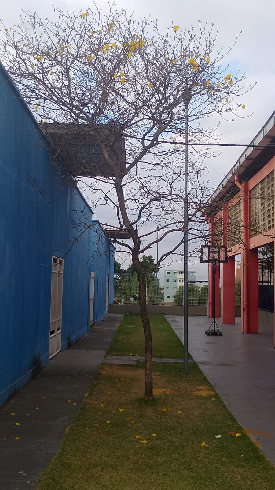
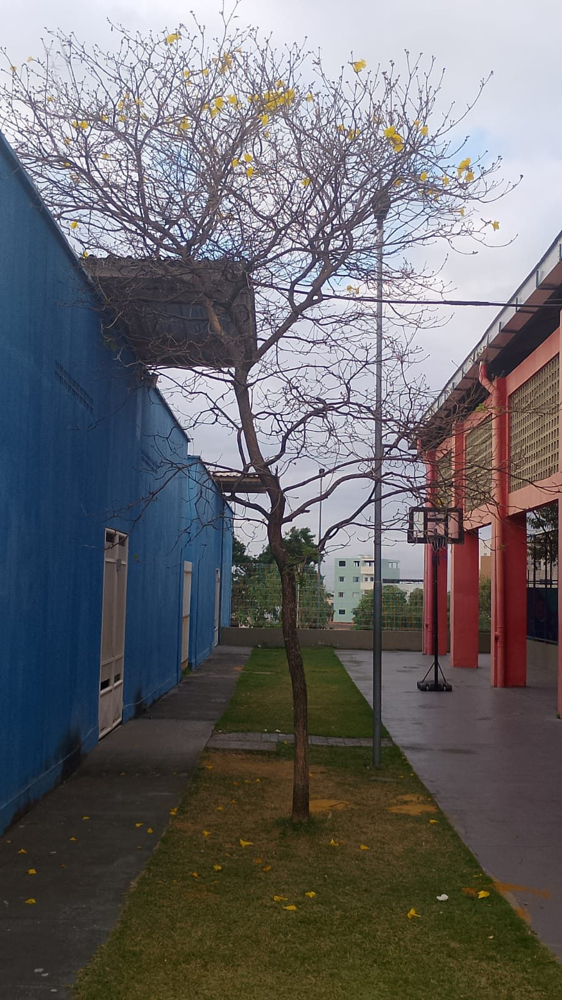

Conhecido também como ipê-amarelo-cascudo, ipê-do-morro ou pau-d'arco-amarelo, é uma das espécies mais plantadas na arborização urbana brasileira — reconhecida à distância pelo hábito raro de florescer completamente sem folhas.
A casca grossa e sulcada ("cascuda") e a copa arredondada e larga ajudam a diferenciá-lo de outros ipês de flor amarela, como o ipê-mirim.

Ocorre naturalmente na Mata Atlântica, do Espírito Santo a Santa Catarina, em formações de mata pluvial — e também se estende por áreas de Cerrado no interior do país.
É uma espécie nativa, mas não endêmica: hoje é cultivada em quase todo o Brasil como árvore ornamental e de arborização de ruas.
Entre o fim do inverno e o início da primavera, o ipê-amarelo fica completamente sem folhagem e se cobre de flores douradas — como nas fotos desta árvore.
Idade e data de plantio não dá pra confirmar só pela foto — a estimativa abaixo é visual (porte e diâmetro do tronco). Edite os campos se tiver o registro real.